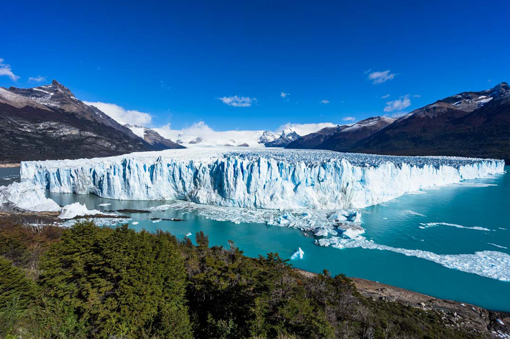
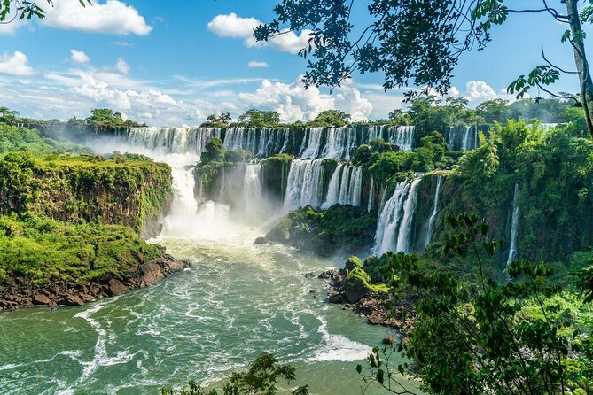
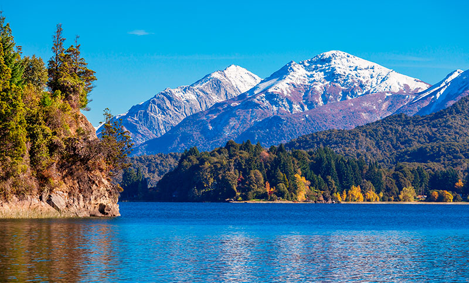
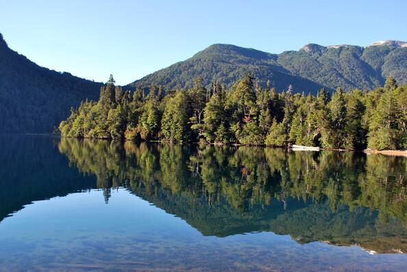
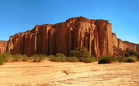
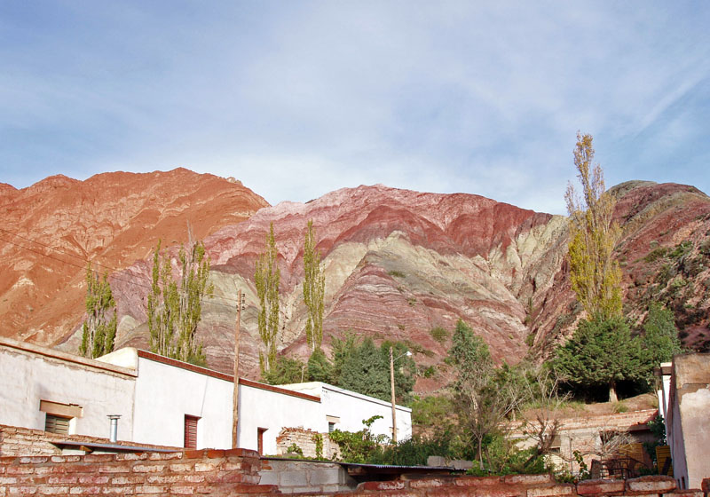

Parques Nacionales
Gestionamos las áreas protegidas más importantes del país como espacios de conservación del patrimonio natural y cultural, investigación, turismo sostenible y desarrollo local
Parque Nacional Los Glaciares
Ubicado en la provincia de Santa Cruz, Argentina, el Parque Nacional Los Glaciares abarca más de 2,800 km² de paisajes glaciares y montañosos.
Parque Nacional Iguazú
Ubicado en la provincia de Misiones, Argentina, el Parque Nacional Iguazú es famoso por sus impresionantes cataratas.
Parque Nacional Nahuel Huapi
Ubicado en las provincias de Neuquén y Río Negro, el Parque Nacional Nahuel Huapi abarca más de 7,000 km² de lagos, bosques y montañas. Este parque es esencial para la conservación de los bosques andinos-patagónicos.
Parque Nacional Los Alerces
El Parque Nacional Los Alerces, ubicado en la provincia de Chubut, Argentina, es famoso por su bosque de alerces, uno de los árboles más antiguos del planeta. Es crucial para la conservación de su biodiversidad.
Parque Nacional Talampaya
Ubicado en la provincia de La Rioja, Argentina, el Parque Nacional Talampaya es conocido por sus formaciones geológicas y su rica biodiversidad. Es un lugar ideal para el ecoturismo.
Parque Nacional Quebrada de Humahuaca
Ubicado en la provincia de Jujuy, Argentina, el Parque Nacional Quebrada de Humahuaca abarca un paisaje espectacular de montañas y valles, famoso por su diversidad cultural y natural.